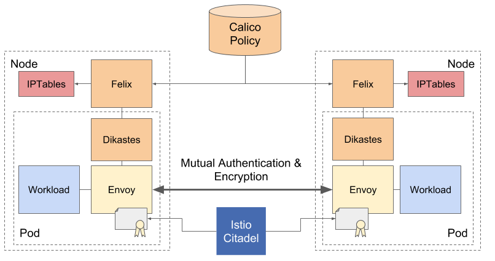

Application Layer Policy
Application Layer Policy for Project Calico enforces network and application layer authorization policies using Istio.

Istio mints and distributes cryptographic identities and uses them to establish mutually authenticated TLS connections between pods. Calico enforces authorization policy on this communication integrating cryptographic identities and network layer attributes.
The envoy.ext_authz filter inserted into the proxy, which calls out to Dikastes when service requests are
processed. We compute policy based on a global store which is distributed to Dikastes by its local Felix.
Getting Started
Application Layer Policy is described in the Project Calico docs.